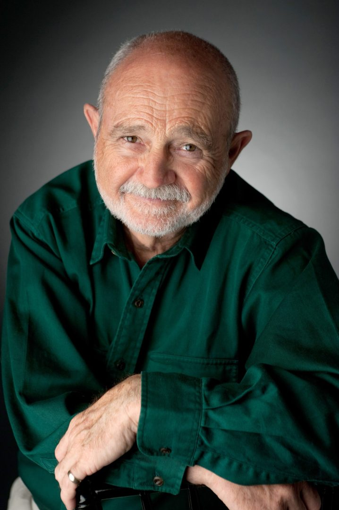
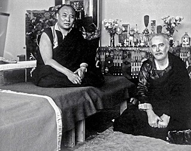
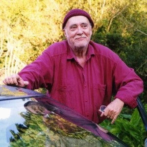
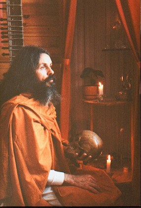
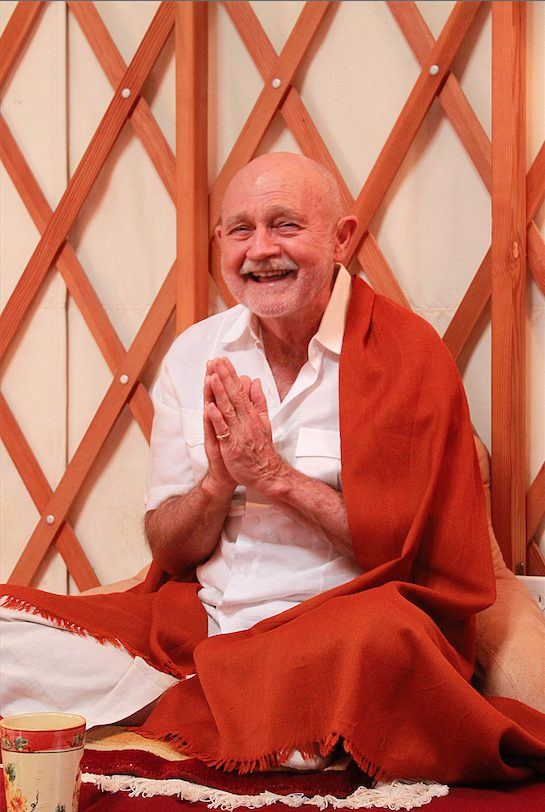

Lineage
Upasaka Culadasa
His Buddhist lineage, his career in physiology and neuroscience, his wishes for his teachings, and his life. John Yates, Ph.D., 1945–2021.

The Buddhist lineage of Upasaka Culadasa
Upasaka Culadasa, ordained by Upasaka Kema Ananda, ordained by Namgyal Rinpoche (Ananda Bodhi), ordained by His Holiness the 16th Gyalwa Karmapa, whose lineage is traced to the Buddha. Upasaka Culadasa’s Dhammacariya (Dhamma teacher) was Jotidhamma Bhikkhu, who was trained by Namgyal Rinpoche (Ananda Bodhi). Ananda Bodhi (Namgyal Rinpoche) was also ordained by U Thila Wunta Sayadaw, ordained by Bodaw Aung Min Gaung, ordained by Ajahn Mun Bhuridatta, whose lineage is traced to the Buddha. Ananda Bodhi (Namgyal Rinpoche) was also trained by U Narada (Mingun Jetawun Sayadaw), Sayadaw U Ariya, and Sayadaw U Pyin Nyein Da.
For many years, Culadasa taught physiology and neuroscience and worked at the forefront of the new fields of complementary healthcare education, physical medicine, and therapeutic massage. His unique lineage allows Culadasa to provide his students with a broad and in-depth perspective on the Buddha Dharma. He combines the original teachings of the Buddha with an emerging, scientific understanding of the mind to give students a rich and rare opportunity for rapid progress and profound insight.
From teacher to student
Ordination passed from teacher to student, in a lineage traced to the Buddha.

His Holiness the 16th Gyalwa Karmapawith Namgyal RinpocheWhose lineage is traced to the BuddhaPhoto: wangapeka.org 
Namgyal RinpocheAnanda BodhiOrdained by His Holiness the 16th Gyalwa KarmapaPhoto: wangapeka.org 
Upasaka Kema AnandaOrdained by Namgyal RinpochePhoto: arrowriver.ca 
Upasaka CuladasaJohn Yates, Ph.D.Ordained by Upasaka Kema Ananda
Culadasa's wishes and his legacy
In his final days, Culadasa asked for three things: aside from his published book the Mind Illuminated, that his work be freely and equally available to all students; that he be given attribution when used; and that he have no single successor, but many.
The Creative Commons licenses allow the first two wishes to be accomplished. The most basic license (CC-BY) allows reuse building upon Culadasa's work, even commercially, as long as, credit is given to Culadasa for the original creation. This is the most flexible license and allows all students equal access. For more information visit the creative commons website:
https://creativecommons.org/licenses. (CC-BY License descriptions)
https://creativecommons.org/licenses/by/4.0/legalcode. (CC-BY License)
As we progress, material will be put under this license to ensure open use. We do this to honor Culadasa's wishes and his legacy. Culadasa was always supportive of the use of his material, especially for innovative ideas. Please use the work he has offered freely to further your practice, and the practice of others. All of Culadasa’s students are his successors.
The Yates family
Remembering Culadasa
We want you to know that our father and brother, John Yates, Culadasa, died on the afternoon of September 12th. He died at home, in the company of family and friends.
We’ve spent time talking together, sharing stories and memories of John; celebrating his life and the ways he touched us.
May your memories of him bring peace and joy.
May you be well,
The Yates family
Obituary
Our father and brother, John Yates, Culadasa, died on the afternoon of September 12th. He died at home in Tucson AZ at the age of 76, in the company of family and friends. He is survived by his three sons, John Damien Yates, Charles Yates, Sean Yates; his numerous grandchildren; and his sister, Claire Yates.
John was born in Ogden, Utah on June 28 1945. He spent his early years in Arizona, but the family moved from there to Texas when he was a child. After a tumultuous young adulthood in Texas, John moved to Winnipeg, Canada to pursue his education. Over the next couple of decades he moved to Calgary and then Vancouver in pursuit of an academic career, and his ever-deepening practice and study of Buddhism. He finally retired from his academic career and returned to Arizona to live in Cochise Stronghold. The peace and beauty of the Stronghold inspired and informed his practice and that of many others.
John was a seeker in every sense of the word. He never met an idea he didn't want to understand and follow doggedly to its logical conclusion, no matter how convoluted the path.
John was diagnosed with lung cancer in 2015, and fought it for the next six years. He finally succumbed to it when the cancer metastasized to his brain early this summer.
To those who didn’t know John, or knew him only as Culadasa the scholar, he was funny and easily delighted, with an infectious grin and Yoda ears. We will miss him dearly.
Culadasa (John Yates, Ph.D.) is the founder of Dharma Treasure Buddhist Sangha in Tucson, Arizona, over which he presided as the spiritual director from 2008 to 2019. He is the author of The Mind Illuminated: A Complete Meditation Guide Using Buddhist Wisdom and Brain Science (Dharma Treasure Press, October 6, 2015). A meditation master with over four decades of experience in the Tibetan and Theravadin Buddhist traditions, Culadasa was ordained as an Upasaka (dedicated lay-practitioner) in 1976 and received ordination in the International Order of Buddhist ministers in Rosemead, California in December 2009.
His principal teachers were Upasaka Kema Ananda and the Venerable Jotidhamma Bhikkhu, both trained in the Theravadin and Tibetan Karma Kagyu traditions with lineage to the Venerable Ananda Bodhi (later recognized by the 16th Gyalwa Karmapa as the tulku Namgyal Rinpoche)
In 1996, Culadasa retired from academia and moved with his wife Nancy into an old Apache stronghold in the southeastern Arizona wilderness to live a contemplative life and deepen their spiritual practice together.
The Mind Illuminated is the first comprehensive guide to Buddhist meditation for a Western audience. Written with clarity and detail, this user-friendly meditation manual provides the reader with in depth knowledge of meditation, Buddhism, and science of the mind. The Mind Illuminated is for mediators of all levels with step-by-step guidance for every stage of the path – from the very first sit all the way to mastery of the deepest states of peace and insight.
Culadasa is also the author of the groundbreaking book, A Physician’s Guide to Therapeutic Massage and served as the founding president of the Physical Medicine Research Foundation.